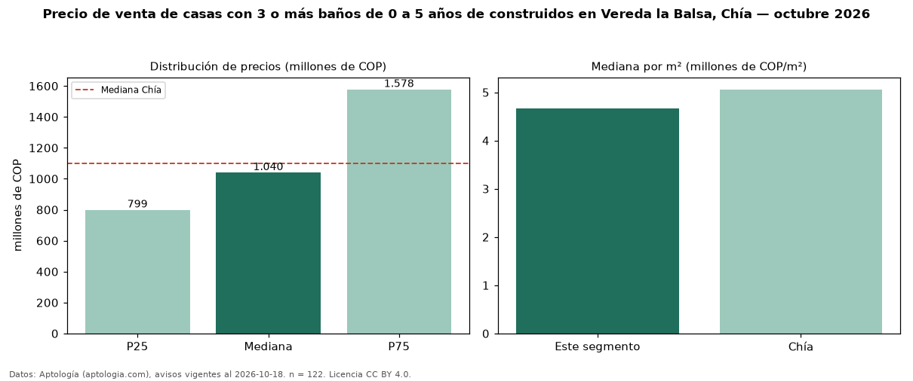

Precio de venta de casas con 3 o más baños de 0 a 5 años de construidos en Vereda la Balsa, Chía — octubre 2026
En Vereda la Balsa, Chía, la mediana de precio de venta de casas con 3 o más baños de 0 a 5 años de construidos es COP 1,04 mil millones, según 122 avisos vigentes. Frente a la mediana de las casas con 3 o más baños en venta de Vereda la Balsa (COP 1,11 mil millones, n = 196), queda 6 % por debajo; este segmento reúne el 62 % de esos avisos. Por metro cuadrado, la mediana es COP 4,66 millones/m² (n = 122), 1 % por encima de las casas con 3 o más baños en venta de Vereda la Balsa (COP 4,63 millones/m²). El área mediana anunciada es 241 m². El segmento con más oferta es el de 3 o más habitaciones (122 avisos, mediana COP 1,04 mil millones). La administración mediana declarada es COP 751.600 al mes (n = 96). La mitad central de los avisos va de COP 799 millones a COP 1,58 mil millones (razón 2,0), una dispersión moderada. El estrato más frecuente es 4 (50 % de los avisos con estrato). Datos: Aptología (aptologia.com), CC BY 4.0 — https://www.aptologia.com/casas-en-venta/chia/vereda-la-balsa. Archivos: PDF, CSV con las cifras y gráfica PNG.

| Avisos únicos | 122 |
|---|---|
| Percentil 25 | COP 798.750.000 |
| Mediana | COP 1.040.000.000 |
| Percentil 75 | COP 1.577.500.000 |
| Mediana por m² | COP 4.662.053 |
Fuente: avisos vigentes de portales inmobiliarios recopilados por Aptología, deduplicados (mínimo 30 avisos únicos por celda). Precios pedidos, no cerrados. Fecha: 2026-10-18.